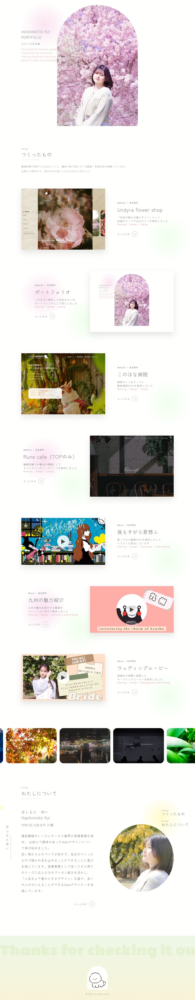
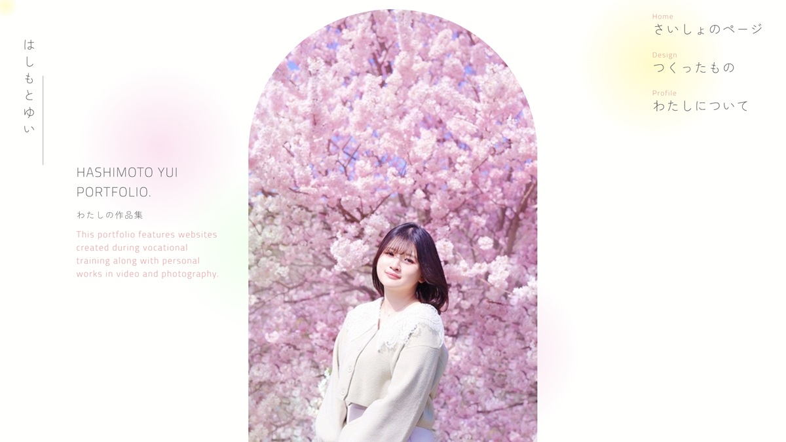

Website ｜ 自主制作
ポートフォリオ
転職活動に向けてポートフォリオサイトを制作しました。 ひとつひとつの制作に対して、どんなことを考えながら取り組んだのかが伝わるように、見た目だけでなく内容の伝わりやすさも大切にしました。 自分らしさや仕事への向き合い方が少しでも伝わるようなサイトを目指しています。
↗ サイトをみる
ターゲット
採用ご担当者の皆様。
現状の課題
これまでの制作物をひとつにまとめてお見せできるものがない。
自分らしさやものづくりに対する姿勢を知ってもらう機会が少ない。
自分らしさやものづくりに対する姿勢を知ってもらう機会が少ない。
目的
転職活動において選考を通過する。
採用ご担当者様に、書類だけでは伝わりにくい人柄や仕事への向き合い方も伝えられるようにし、一緒に働く姿をイメージしていただく。
採用ご担当者様に、書類だけでは伝わりにくい人柄や仕事への向き合い方も伝えられるようにし、一緒に働く姿をイメージしていただく。
情報設計のこだわり
まず、採用担当の方に最初に見ていただきたい制作物を、メインビジュアルの直後に配置しました。
Webサイトに加えて、趣味で制作した動画も見ていただけるよう、代表作を3つ掲載しています。
それぞれの詳細については下層ページにまとめ、必要な情報にたどり着きやすい構成にしました。
また、自身で撮影した写真をアニメーションで流すことで、作品の雰囲気やスキルが一目で伝わるよう工夫しています。
さらに、プロフィールページでは経歴やスキルだけでなく、人柄もより詳しく知っていただけるようにし、興味を持ってもらえるような流れを意識しています。
デザインのこだわり
シンプルでやわらかい雰囲気をベースに、春らしい色味を取り入れ、自分らしさや人柄が自然と伝わるデザインを意識しました。
自身の写真も掲載することで、書類だけでは伝わりにくい普段の印象や雰囲気を感じていただけるようにしています。
また、適度に動きを加えることで、飽きずに見ていただける工夫を取り入れ、採用ご担当者様の負担にならない、やさしく見やすいポートフォリオを目指しました。
制作期間
企画1週間
写真撮影1日
デザイン1週間
コーディング1週間
使用ツール
Photoshop | Figma | SublimeText
